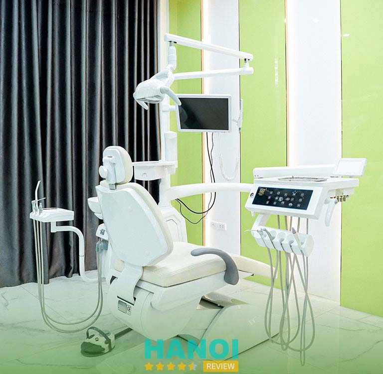
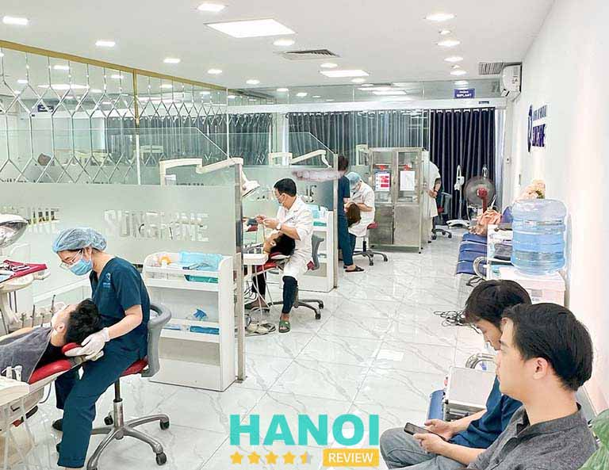
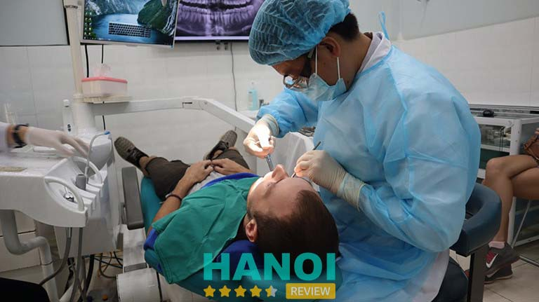
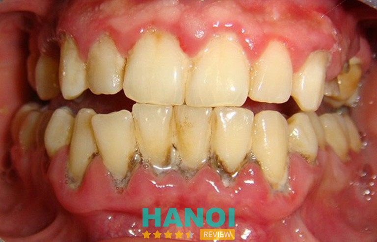
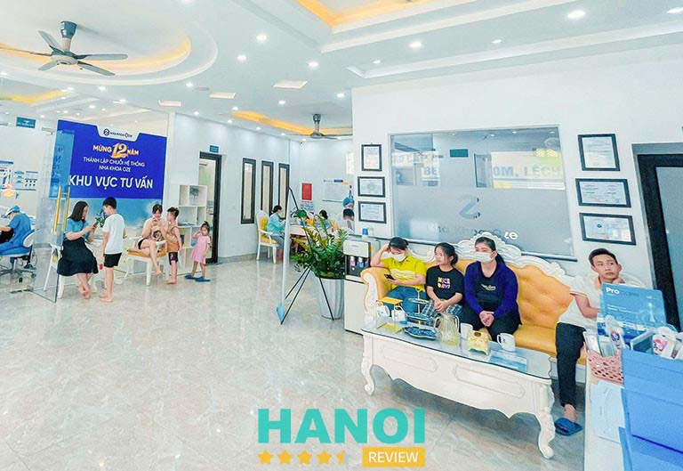
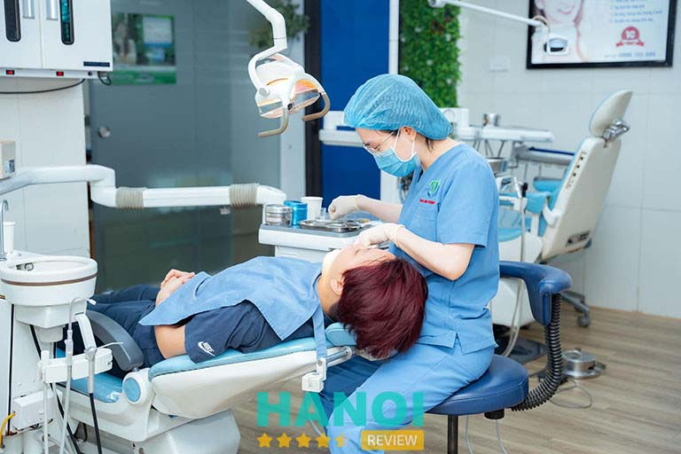
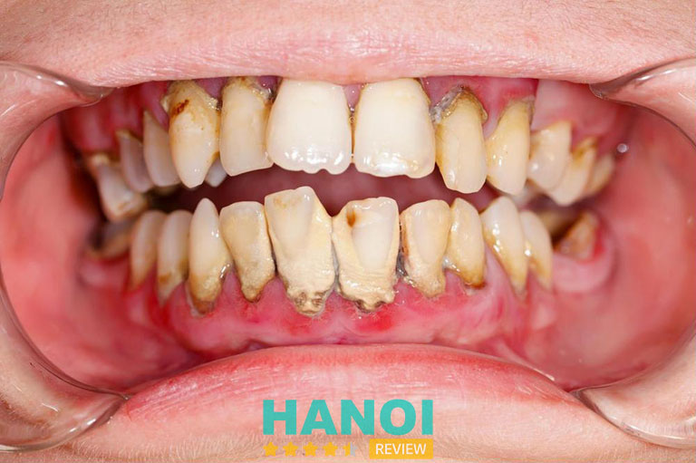
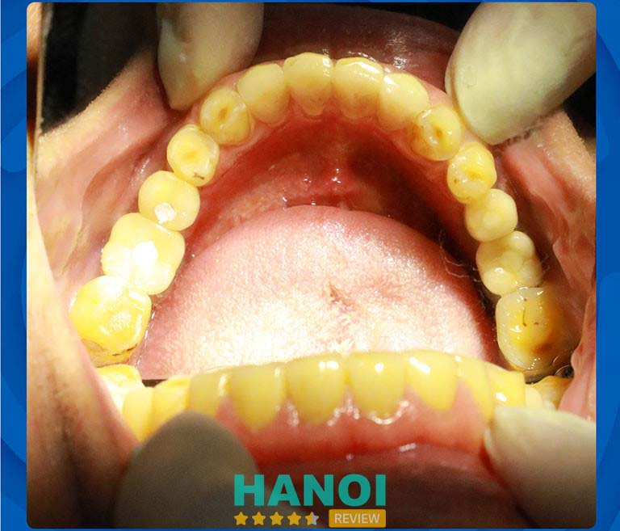
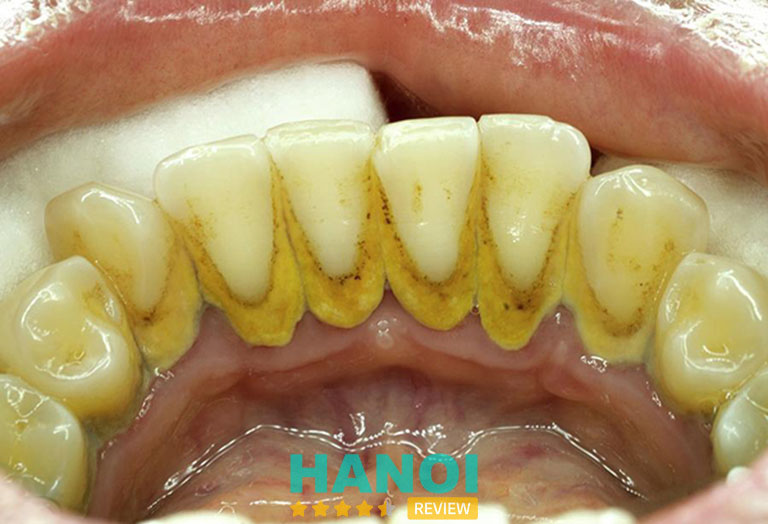

10 Địa chỉ cạo vôi răng tại Hà Nội sạch, không ê buốt
Ngoài các bệnh viện công lập, bạn đọc còn có thể tìm đến những địa chỉ cạo vôi răng tư nhân tại Hà Nội uy tín để thực hiện. Trong nội dung sau, HaNoiReview giúp bạn tổng hợp ra 10 nha khoa lấy cao răng ở thủ đô giá rẻ, sạch nhất. Bạn nên tham khảo.
Top 10 Địa chỉ cạo vôi răng ở Hà Nội tốt nhất
Cao răng thường xuất hiện liên tục trong suốt 24 giờ mỗi ngày do hoạt động ăn uống diễn ra thường xuyên. Khi mảng bám không được loại bỏ, nó có thể dần cứng lại và tạo thành cao răng.
Sự vôi hóa của lớp cao răng này là một trong những nguyên nhân chính gây ra các vấn đề về nướu, bao gồm nướu sưng, đỏ, chảy máu, hơi thở có mùi. Trường hợp nặng hơn, có thể dẫn đến viêm nha chu và thậm chí là mất răng.
Để ngăn ngừa quá trình hình thành cao răng và bảo vệ sức khỏe răng miệng của bạn, việc cạo vôi răng tại một địa chỉ uy tín ở Hà Nội là vô cùng quan trọng.
Danh sách top 10 địa chỉ cạo vôi răng tại Hà Nội dưới đây nhất định sẽ giúp bạn tìm ra câu trả lời.
Nha khoa Minh Thu
Nha khoa Minh Thu là hệ thống phòng khám nha khoa uy tín, với 3 chi nhánh tập trung hoàn toàn tại Hà Nội. Hơn 34 năm kinh nghiệm và đồng hành cùng khách hàng, nơi đây đã trở thành điểm đến đáng tin cậy cho người dân trong và ngoài khu vực.
Nổi bật tại phòng khám là các dịch vụ phức tạp, đòi hỏi kỹ thuật cao như trồng răng implant, bọc răng sứ, chỉnh nha niềng răng. Bên cạnh đó thì các dịch vụ nha khoa tổng quát và trẻ em cũng rất được đánh giá cao. Vì thế nếu đang tìm địa chỉ cạo vôi răng an toàn ở Hà Nội, nhất định nha khoa Minh Thu là nơi bạn nên đến.
Cạo vôi răng hay lấy cao răng tại nha khoa Minh Thu được sử dụng máy móc hiện đại. Giúp quá trình thực hiện diễn ra nhanh chóng, an toàn mà mảng bám được loại bỏ sạch hoàn toàn.
Nha khoa quy tụ đội ngũ nha sĩ giàu kinh nghiệm, được đào tạo bài bản và thường xuyên tu nghiệp, tham gia các chương trình đào tạo quốc tế. Từ đó đủ khả năng và chuyên môn phục vụ nhu cầu chăm sóc và bảo vệ, thẩm mỹ răng miệng tốt nhất cho khách hàng.
- Giá lấy cao răng tại nha khoa Minh Thu là 300.000Đ/ lần
Bằng máy móc tối tân và tay nghề thành thục của các bác sĩ, bạn hoàn toàn có thể yên tâm đến cạo vôi răng tại đây. Suốt quá trình lấy cao răng, bạn sẽ được phòng khám chuẩn bị nước súc miệng kỹ càng.
Tùy theo mức độ vôi bám nhiều hay ít mà thời gian thực hiện lấy cao răng của từng người sẽ khác nhau. Thông thường, sẽ dao động từ 20 – 40 phút, đảm bảo hoàn toàn êm ái và mang đến cảm giác dễ chịu cho bạn.
Thông tin liên hệ:
- Địa chỉ: 92 Hoàng Ngân, P. Trung Hòa, Q. Cầu Giấy, Hà Nội
- Điện thoại: 0876 464 848
- Email: contact@nhakhoaminhthu.com
- Website: nhakhoaminhthu.com
- Fanpage: FB.com/nhakhoaminhthu
Nha khoa SK
Tự hào sứ mệnh kiến tạo nụ cười Việt, nha khoa SK được đông đảo khách hàng khu vực Hà Nội tin tưởng đến chăm sóc răng miệng thường xuyên. Với nguyên tắc đặt sự hài lòng của bệnh nhân lên hàng đầu, trong từng dịch vụ tại SK Dental đều luôn lắng nghe ý kiến và nhu cầu của người bệnh, giúp bệnh nhân tìm đúng phương pháp điều trị tối ưu.
Cạo vôi răng chỉ là thủ thuật đơn giản, tuy nhiên tại nha khoa SK dịch vụ này luôn được trực tiếp các bác sĩ giàu chuyên môn đảm nhận. Thao tác lấy cao răng nhẹ nhàng, không tổn thương, không chảy máu và hoàn toàn không xâm lấn vào mô mềm, làm ảnh hưởng hay tổn thương men răng.

Không chỉ có thế mạnh về đội ngũ y bác sĩ, phòng khám còn được người dân đánh giá cao ở sự chú trọng đầu tư máy móc và thiết bị tiên tiến. Nha khoa SK luôn nghiên cứu và cập nhật thường xuyên các dòng sản phẩm máy móc điều trị thế hệ mới nhất, được giới nha khoa tin dùng.
Nha khoa SK sử dụng máy siêu âm hiện đại để loại bỏ sạch mảng bám cao răng. Không chỉ ở bề mặt mà còn ở các vị trí khó như kẽ chân năng, dưới nướu, bề mặt răng hàm trên, … Phần đầu máy có dạng ống, hoạt động bằng sóng siêu âm mạnh mẽ. Thiết bị này dẫn sóng siêu âm vào chân răng, giúp làm sạch tối đa thức ăn và mảng bám cứng đầu một cách hiệu quả.
Toàn bộ quá trình lấy cao răng tại nha khoa SK chỉ diễn ra trong vòng 30 phút và cực kỳ êm ái. Bác sĩ thực hiện nhẹ tay, không đau, không làm mất máu. Bên cạnh đó trả lại cho bạn những chiếc răng sáng bóng, răng không còn cảm giác nặng nề và ngay cả mùi hôi miệng cũng được giảm thiểu.
Thông tin liên hệ:
- Địa chỉ: 230 Xã Đàn, P. Phương Liên, Q. Đống Đa, Hà Nội
- Điện thoại: 0969 635 680
- Email: nhakhoaquoctesk@gmail.com
- Fanpage: FB.com/Skdental.VN
GỢI Ý: 5 Phòng khám nha khoa tại Q. Đống Đa uy tín, BS giỏi
Nha khoa Sunshine
Nổi tiếng là nha khoa chuyên bọc răng sứ chất lượng ở Hà Nội, Sunshine Dental nhận được về không ít những lời đánh giá tích cực của khách hàng. Ngoài ra, các dịch vụ khác như nha khoa tổng quát, chỉnh nha niềng răng cũng được người dân khu vực đánh giá cao về chất lượng.
Tại Nha khoa SunShine, sự đẳng cấp của đội ngũ y bác sĩ không chỉ xuất phát từ trình độ chuyên môn mà còn là sự kết hợp giữa sự chu đáo, tận tâm. Tập thể bác sĩ tại đây luôn lắng nghe, thấu hiểu mong muốn của khách hàng. Từ đó có thể giúp bạn tìm ra được đúng phương pháp điều trị
. Uy tín của nha khoa được tạo dựng bởi chính sự hài lòng tuyệt đối của khách hàng, và đó cũng chính là mục tiêu hoạt động của phòng khám cho đến ngày nay.

Cũng giống các địa chỉ cạo vôi răng bằng sóng siêu âm hiện đại khác ở Hà Nội, dịch vụ này tại nha khoa Sunshine không chỉ có hiệu quả làm sạch, mà sóng siêu còn tạo ra năng lượng màu, kích thích tế bào nhú răng, giúp phần nướu và men răng săn chắc hơn, bảo vệ răng miệng bạn khỏe mạnh.
Phòng khám thường xuyên có nhiều chương trình ưu đãi hấp dẫn giúp khách hàng tiết kiệm chi phí khi can thiệp nha khoa. Ngoài dịch vụ cạo vôi răng, bạn có thể tham khảo thêm các dịch vụ thế mạnh tại đây như:
- Điều trị các bệnh về răng
- Niềng răng
- Bọc răng sứ
- Chữa cười hở lợi
- Nha khoa thẩm mỹ
Với chính sách thanh toán linh hoạt và có hỗ trợ trả góp 0%, nha khoa Sunshine suốt thời gian qua luôn đón tiếp một lượng lớn khách hàng đến thăm khám mỗi năm. Để không phải chờ đợi lâu, bạn có thể liên hệ phòng khám đặt lịch hẹn trước.
Thông tin liên hệ:
- Địa chỉ: 488 Xã Đàn, P. Nam Đồng, Q. Đống Đa, Hà Nội
- Điện thoại: 0911 686 820
- Email: sunshine@gmail.com
- Website: nhakhoasunshine.vn
- Fanpage: FB.com/nhakhoathammysunshine
Nha khoa Châu Thành
Nha khoa Châu Thành là trung tâm nha khoa hàng đầu Hà Nội chuyên về răng sứ thẩm mỹ và Implant. Ngoài ra, dịch vụ cạo vôi răng tại đây cũng rất được khách hàng tin tưởng. Dịch vụ này tại phòng khám mang lại hiệu quả cao trong việc làm sạch mảng bám, vụn thức ăn tích tụ lâu ngày trên răng.
Bằng việc kết hợp giữa máy lấy cao răng hiện đại chuyên dụng và tay nghề bác sĩ thành thục, nha khoa Châu Thành tự tin mang đến cho bạn kết quả hàm răng sạch bong mảng bám chỉ trong một lần điều trị duy nhất. Tất cả các bác sĩ làm việc tại đây đều có kiến thức chuyên môn sâu, giàu kinh nghiệm và được đào tạo ở môi trường y danh giá trong và ngoài nước.
Đội ngũ ban lãnh đạo nha khoa Châu Thành cũng thường xuyên tổ chức các chương trình hội thảo, huấn luyện nội bộ để cập nhật kiến thức và kỹ năng mới trong lĩnh vực để đáp ứng nhu cầu ngày càng tăng của khách hàng.

Nha khoa mạnh dạn đầu tư máy móc và các thiết bị, công nghệ tiên tiến được nhập từ châu Âu và Hoa Kỳ như máy CT Cone Beam, máy quét dấu răng Itero 5D, máy tẩy trắng răng Laser Zoom II,… đảm bảo đạt chuẩn quốc tế.
Đặc biệt, quy trình cạo vôi răng cũng như các dịch vụ khác của phòng khám luôn được diễn ra trong môi trường vô trùng khép kín. Phòng khám khang trang, không gian thoáng đãng và được giữ vệ sinh sạch sẽ. Qua đó mang đến trải nghiệm lý tưởng nhất cho khách hàng.
Giá cạo vôi răng, đánh bóng răng tại nha khoa Châu Thành có giá: 300.000Đ/ lần. Sau khi cạo vôi răng, bác sĩ tiến hành phủ thêm 1 lớp sáp bóng trên bề mặt răng, giúp lấy đi những vụn vôi li ti còn sót lại. Kết thúc thủ thuật này, những chiếc răng xinh xắn của bạn hoàn toàn được trở nên bóng mịn, sáng đẹp hơn trước.
Thông tin liên hệ:
- Địa chỉ: 36 Hàm Long, P. Hàng Bài, Q. Hoàn Kiếm, Hà Nội
- Điện thoại: 0904 973 236
- Email: nhakhoachauthanh2022@gmail.com
- Website: nhakhoachauthanh.com
- Fanpage: FB.com/nhakhoachauthanh
THAM KHẢO: 5 Phòng khám nha khoa tại Q. Hoàn Kiếm chất lượng đi đầu
Nha khoa Quốc tế Hali
Ngay từ khi mới thành lập, nha khoa Quốc tế Hali đã đặt ra mục tiêu cho mình là lấy chữ “Tâm” và “Đức” làm nền tảng trong mọi hoạt động. Đây được xem như là kim chỉ nam xuyên suốt của phòng khám. Các dịch vụ tại nha khoa luôn mang đến cho khách hàng những giá trị riêng biệt, tạo nên niềm tin vững chắc trong lòng hàng nghìn bệnh nhân.
Dịch vụ cạo vôi răng tại nha khoa Hali được thực hiện bằng máy siêu âm Piezotome hiện đại. Thông qua nguyên lý siêu âm để làm rung và bong tách dần các mảng bám lâu ngày trên răng mà không làm tổn thương nướu.
Cạo vôi răng thường không đau, tuy nhiên một số người có răng nhạy cảm hoặc vôi răng quá dày, sẽ có cảm giác ê buốt nhẹ. Tại nha khoa Quốc tế Hali, các bạn sĩ với kỹ thuật sử dụng máy thành thục, nhất định sẽ giúp bạn luôn có những cảm giác êm ái khi tiến hành cạo vôi răng.

Khách hàng đến đây sẽ được các chuyên gia, bác sĩ, kỹ thuật viên và nhân viên tư vấn tận tâm. Dù dịch vụ nào, bạn cũng sẽ được tư vấn trực tiếp 1: 1 cùng nha sĩ chuyên môn. Nhờ vậy có thể đưa ra các giải pháp phù hợp cho từng trường hợp. Nha khoa luôn đầu tư gia nhập công nghệ mới, ứng dụng những dịch vụ mới nhất, được giới nha khoa chuyên dùng. Từ đó đáp ứng mọi nhu cầu của bạn.
Máy cạo vôi răng bằng sóng siêu âm có dạng đầu tù, trơn láng, kết hợp với tia nước phun cường độ cao. Qua đó đẩy nhanh các mảnh vụn ra ngoài, kể cả ở những góc ngách “khó ở” trên bề mặt răng và kẽ nướu. Chỉ trong thời gian ngắn, vôi răng của bạn đã được làm sạch. Sau khi hoàn tất, bạn sẽ được súc miệng bằng dung dịch chuyên dụng để kiểm soát tình trạng viêm nhiễm nướu.
Thông tin liên hệ:
- Địa chỉ: 64 Hào Nam, P. Chợ Dừa, Q. Đống Đa, Hà Nội
- Điện thoại: 0334 218 333
- Email: nhakhoaquoctehali@gmail.com
- Website: nhakhoaquoctehali.vn
- Fanpage: FB.com/nhakhoaquoctehali.halidental
Nha khoa Oze
Dịch vụ lấy cao răng tại Nha khoa Oze Hà Nội – Giải pháp hoàn hảo cho nụ cười rạng ngời và sức khỏe răng miệng tốt nhất bạn nên tham khảo. Với hơn 15 năm kinh nghiệm phục vụ hàng ngàn khách hàng, đơn vị đã khẳng định được vị thế của mình trong lĩnh vực nha hoa tại thủ đô.
Điểm mạnh lớn nhất tại Nha khoa Oze là sự kết hợp hoàn hảo giữa chi phí phải chăng và chất lượng tuyệt hảo. Đặc biệt, hiện nay, phòng khám đang có chương trình ưu đãi vô cùng hấp dẫn cho khách hàng: chỉ với 30.000Đ, bạn đã có thể trải qua quy trình lấy cao răng chuyên nghiệp. Gói dịch vụ này bao gồm cả khám tổng quát sức khỏe răng miệng và đánh bóng làm sáng răng, đảm bảo sự hài lòng và an toàn tuyệt đối cho khách hàng.

Điều làm nổi bật Nha khoa Oze chính là đội ngũ bác sĩ chuyên môn cao, xuất thân từ các bệnh viện lớn và trường Đại học Y uy tín trong nước và nước ngoài. Bạn hoàn toàn yên tâm về quá trình điều trị, với trang thiết bị hiện đại, hỗ trợ quy trình lấy cao răng nhanh chóng, chính xác và không gây đau đớn, tổn thương mô mềm nào.
Không chỉ dừng lại ở mức giá hấp dẫn, Nha khoa Oze còn cam kết duy trì chất lượng dịch vụ ở mức tốt nhất. Quy trình lấy cao răng tại đây được thực hiện bài bản, đảm bảo vôi răng sạch, an toàn và không đau.
Với Nha khoa Oze, bạn không chỉ đặt niềm tin vào một địa điểm uy tín, mà còn được tận hưởng sự chăm sóc toàn diện cho nụ cười và sức khỏe răng miệng của mình.
Thông tin liên hệ:
- Địa chỉ: 10 Đồng Me, P. Mễ Trì, Q. Nam Từ Liêm, Hà Nội
- Điện thoại: 0866 866 010
- Email: ozedental@gmail.com
- Website: nhakhoaoze.vn
- Fanpage: FB.com/nhakhoaozevietnam
GỢI Ý: 6 Tiệm Nail tại quận Nam Từ Liêm uy tín, dịch vụ tốt, giá rẻ
Nha khoa Trang Dung
Dịch vụ lấy cao răng tại nha khoa Trang Dung Hà Nội là giải pháp toàn diện cho việc duy trì sức khỏe răng miệng của bạn. Đồng thời nó còn giúp tránh xa các bệnh lý có thể xuất phát từ việc cao răng.
Với mức độ nhẹ nhất, cao răng có thể gây ra viêm nướu và nếu không được điều trị kịp thời, có thể dẫn đến viêm nha chu và viêm tủy ngược dòng, những vấn đề rất nguy hiểm cho sức khỏe răng miệng của chúng ta.
Tuy nhiên, đừng lo lắng, Nha khoa Trang Dung sẵn sàng đưa ra giải pháp an toàn và hiệu quả cho bạn. Phòng khám hiện áp dụng công nghệ PTA tiên tiến trong quá trình lấy cao răng.
Hệ thống siêu âm và vệ sinh răng chuyên sâu bằng khí được sử dụng để loại bỏ sạch các mảng bám trên răng, đảm bảo quá trình lấy cao răng an toàn và không gây đau. Đây là một công nghệ được nhiều chuyên gia đánh giá cao về tính hiệu quả và công năng.

Nha khoa Trang Dung không chỉ cam kết về chất lượng dịch vụ mà còn đem đến sự tiện lợi và lựa chọn về chi phí phải chăng.
Cơ sở cung cấp các dịch vụ nha khoa đa dạng, cùng với mức giá ưu đãi để bạn có thể chăm sóc răng miệng một cách hiệu quả và tiết kiệm nhất. Ngoài ra, phòng khám luôn có nhiều chương trình tặng quà khuyến mãi dành cho khách hàng, giúp bạn cảm thấy thêm hứng thú khi chăm sóc răng miệng.
Nếu bạn đang gặp phải vấn đề về cao răng hoặc cần tư vấn về sức khỏe răng miệng của mình, Nha khoa Trang Dung cam kết đưa đến bạn dịch vụ chất lượng và giải pháp hiệu quả, giúp bạn duy trì một nụ cười rạng ngời và sức khỏe răng miệng hoàn hảo.
Dịch vụ lấy cao răng tại phòng khám:
- Lấy cao răng thường ART: 150.000Đ/ lần điều trị. Hoạt động với cơ chế rung siêu âm bằng sắt từ, có chi phí khá thấp. Máy có độ rung khỏe, ổn định, hạn chế được cảm giác ê buốt trong quá trình thực hiện
- Lấy cao răng VIP bằng công nghệ PTA: 500.000Đ/ lần (chưa áp dụng khuyến mãi). Sử dụng hệ thống siêu âm và làm sạch răng bằng công nghệ khí muối, giúp loại bỏ sạch sẽ cao răng và mảng bám trên lợi – lực rung nhẹ nhàng, không gây chảy máu hay đau nhức – bước sóng lấp lại khoảng trống và ngăn cao răng bám lại.
Thông tin liên hệ:
- Địa chỉ: 3B Trần Hưng Đạo, P. Bạch Đằng, Q. Hoàn Kiếm, Hà Nội
- Điện thoại:0888 155 000
- Email: Trangdungnhakhoa@gmail.com
- Website: nhakhoatrangdung.vn
- Fanpage: FB.com/nhakhoatrangdung
Nha khoa Paris
Nếu bạn đang tìm kiếm một địa chỉ lấy cao răng an toàn và không đau tại Hà Nội, nha khoa Paris là một lựa chọn hàng đầu dành cho bạn. Với kinh nghiệm hoạt động từ năm 2016 đến nay, nha khoa đã trở thành một điểm đến quen thuộc cho người dân thủ đô trong việc chăm sóc răng miệng.
Nha khoa Paris được xây dựng và điều trị theo tiêu chuẩn chất lượng của Pháp, đảm bảo rằng bạn sẽ nhận được sự phục vụ chuyên nghiệp và hiệu quả. Điều này không chỉ giúp bạn rút ngắn thời gian điều trị mà còn đảm bảo rằng sức khỏe răng miệng luôn được quan tâm và bảo vệ tối ưu.

Khi bạn quyết định lấy cao răng tại nha khoa Paris, bạn sẽ trải qua một trải nghiệm độc đáo với công nghệ sóng âm Cavitron BP. Công nghệ này mang lại nhiều ưu điểm đáng kể như sau:
- Công nghệ sóng âm Cavitron BP giúp loại bỏ 100% mảng bám một cách hiệu quả mà không gây cảm giác đau đớn. Khả năng xử lý cao răng dày và mảng bám cứng lâu năm một cách hiệu quả. Do đó bạn không cần lo lắng về tình trạng răng miệng của mình.
- Điều quan trọng nhất trong quá trình điều trị răng là an toàn. Nha khoa Paris đảm bảo quy trình lấy cao răng hoàn toàn vô trùng và vô khuẩn, ngăn chặn bất kỳ khả năng nhiễm trùng hoặc lây nhiễm chéo nào.
- Một điểm cộng khác của nha khoa Paris chính là quá trình lấy cao răng được thực hiện nhanh chóng và hiệu quả, chỉ mất từ 10 đến 15 phút. Điều này giúp bạn tiết kiệm thời gian và chi phí. Đồng thời đảm bảo răng miệng của bạn luôn trong tình trạng tốt nhất.
Với những ưu điểm nổi bật và chất lượng hàng đầu, nha khoa Paris là một lựa chọn lý tưởng cho việc lấy cao răng và duy trì sức khỏe răng miệng của bạn.
Thông tin liên hệ:
- Địa chỉ: 39 Quang Trung, P. Trần Hưng Đạo, Q. Hoàn Kiếm, Hà Nội
- Điện thoại: 0247 302 2226
- Email: tuvan@nhakhoaparis.vn
- Website: nhakhoaparis.vn
- Fanpage: FB.com/NhaKhoaParis
Trung tâm nha khoa Hà Nội Sydney
Dịch vụ lấy cao răng tại Trung tâm nha khoa Hà Nội Sydney được thực hiện theo quy trình 5 bước cụ thể, để đảm bảo tính chất lượng và an toàn cho khách hàng:
- Thăm khám, tư vấn: Quy trình bắt đầu bằng việc bác sĩ thăm khám răng miệng của bạn để xác định mức độ cao răng cụ thể. Tại đây, bác sĩ cũng sẽ tư vấn với bạn về phương pháp lấy cao răng hoặc điều trị các vấn đề răng miệng khác nếu cần.
- Vệ sinh răng: Trước khi tiến hành lấy cao răng, bác sĩ sẽ tiến hành vệ sinh răng miệng của bạn. Điều này giúp đảm bảo môi trường thực hiện sạch sẽ và giảm nguy cơ lây nhiễm bệnh.

- Tiến hành lấy cao răng: Bước này bác sĩ sẽ loại bỏ cao răng bằng cách sử dụng đầu máy siêu âm. Bác sĩ áp sát đầu máy và di chuyển nhẹ nhàng xung quanh răng, kẽ răng và vùng tiếp giáp nướu. Mảng bám và cao răng đã bị vôi hóa cứng chắc sẽ tách khỏi bề mặt răng mà không làm tổn thương các mô mềm.
- Đánh bóng răng: Bước tiếp theo là đánh bóng răng. Bác sĩ sử dụng thuốc đánh bóng đặc biệt bôi đều lên bề mặt răng và thực hiện đánh bóng bằng chổi chuyên dụng để giúp bề mặt răng trở nên nhẵn mịn.
- Kiểm tra tổng quát, hướng dẫn chăm sóc răng miệng: Sau khi lấy cao răng, bác sĩ sẽ tiến hành kiểm tra tổng quát răng miệng của bạn một lần nữa. Đồng thời bạn cũng sẽ được hướng dẫn về cách chăm sóc răng miệng sau khi lấy cao răng, giúp duy trì kết quả và sức khỏe răng miệng tốt. Nếu cần, bác sĩ sẽ hẹn tái khám để đảm bảo rằng mọi thứ đang tiến triển đúng hướng.
Với quy trình 5 bước chi tiết và an toàn, Nha khoa Sydney Hà Nội cam kết đem lại cho bạn trải nghiệm lấy cao răng tốt nhất, giúp duy trì một nụ cười rạng ngời và sức khỏe răng miệng hoàn hảo.
- Đánh bóng răng: 100.000Đ
- Cạo vôi răng và đánh bóng – mức độ 1: 150.000Đ
- Cạo vôi răng và đánh bóng – mức độ 2: 200.000Đ
- Cạo vôi răng và đánh bóng – mức độ 3: 300.000Đ
Thông tin liên hệ:
- Địa chỉ: 92 Nguyễn Chánh, P. Trung Hòa, Q. Cầu Giấy, Hà Nội
- Điện thoại: 1900 0390
- Email: nhakhoahanoisydney@gmail.com
- Website: nhakhoahanoisydney.vn
- Fanpage: FB.com/NhakhoaHanoiSydney
TỐT NHẤT: 5 Phòng khám nha khoa Q. Cầu Giấy được tin chọn hàng đầu
Nha khoa Dencos Luxury
Nha khoa Dencos Luxury tự hào là đơn vị nha khoa hàng đầu tại Hà Nội, mang đến cho khách hàng những trải nghiệm điều trị nha khoa độc đáo và đẳng cấp. Bằng cách áp dụng những công nghệ và kỹ thuật tiên tiến nhất trong nha khoa, phòng khám cam kết cung cấp những giải pháp điều trị nha khoa thiết thực, thẩm mỹ và cảm giác thoải mái cho khách hàng.
Môi trường tại nha khoa được thiết kế thân thiện và thoải mái, tạo điều kiện tối ưu để bạn có thể trải qua quá trình điều trị một cách thư giãn. Đội ngũ y tế phòng khám luôn tận tình và quan tâm đến sức khỏe khách hàng, sẵn sàng giải thích chi tiết về các thủ thuật điều trị nha khoa và lắng nghe mọi vấn đề liên quan đến sức khỏe răng miệng của bạn.
Phòng khám luôn tuân thủ các tiêu chuẩn cao nhất về kiểm soát nhiễm khuẩn, đặc biệt trong khu vực điều trị, sử dụng dụng cụ nha khoa vô trùng và thường xuyên thanh lọc không khí trong phòng khám. Qua đó đảm bảo sự an toàn cho cả nhân viên và khách hàng khi đến khám và làm việc.

Dịch vụ cạo vôi răng tại nha khoa là một phần quan trọng trong việc duy trì sức khỏe răng miệng. Cơ sở cung cấp dịch vụ cạo vôi răng với các lựa chọn điều trị phù hợp với nhu cầu của bạn:
- Cạo vôi đánh bóng: 500.000Đ
- Cạo vôi dưới nướu: 600.000Đ – 800.000Đ
Với mức giá hợp lý và chất lượng dịch vụ hàng đầu, Dencos Luxury cam kết mang đến cho bạn một nụ cười rạng ngời và sức khỏe răng miệng vượt trội. Nếu quan tâm, bạn có thể liên hệ ngay đến hotline, để trải qua trải nghiệm nha khoa đẳng cấp và chăm sóc sức khỏe răng miệng tốt nhất.
Thông tin liên hệ:
- Địa chỉ: 135 Bùi Thị Xuân, P. Nguyễn Du, Q. Hai Bà Trưng, Hà Nội
- Điện thoại: 0988 369 599
- Email: khanhdentist92@gmail.com
- Website: nhasidangvietkhanh.vn
- Fanpage: FB.com/dentistdangvietkhanh
7 Kinh nghiệm chọn Địa chỉ cạo vôi răng ở Hà Nội tốt, đáng tin cậy nhất
Việc lấy cao răng định kỳ là một phần quan trọng trong việc duy trì sức khỏe răng miệng và ngăn ngừa nhiều vấn đề răng miệng nguy hiểm. Dưới đây 7 tiêu chí quan trọng của việc chọn địa chỉ lấy cao răng uy tín ở Hà Nội, được Sài Gòn Review phân tích kỹ lưỡng:
- Xem xét uy tín và danh tiếng: Uy tín và danh tiếng của một địa chỉ lấy cao răng định kỳ quyết định độ tin cậy của dịch vụ. Bạn cần tìm hiểu về lịch sử và danh tiếng của nha khoa hoặc phòng khám nha khoa qua đánh giá của bệnh nhân trước đó. Uy tín đảm bảo bạn sẽ nhận được dịch vụ chất lượng và không gặp rủi ro.
- Tập hợp bác sĩ và đội ngũ y tế giỏi: Đội ngũ y tế có vai trò quan trọng trong quá trình lấy cao răng. Đảm bảo rằng tại đó tập hợp bác sĩ và nhân viên y tế có bằng cấp, chuyên môn cao và kinh nghiệm trong lĩnh vực lấy cao răng. Sự chuyên nghiệp và tận tâm của nhân viên phòng khám đảm bảo mang lại quá trình an toàn và hiệu quả cho khách hàng.
- Đầu tư vào công nghệ, thiết bị hiện đại: Công nghệ và thiết bị hiện đại là một yếu tố quan trọng trong việc đảm bảo hiệu suất cũng như tính an toàn. Bạn nên kiểm tra xem địa chỉ có sử dụng các công nghệ tiên tiến, như hệ thống siêu âm và thiết bị lấy cao răng hiện đại không. Công nghệ tốt giúp đảm bảo quá trình lấy cao răng hiệu quả và không đau.
- Đảm bảo tiêu chuẩn vệ sinh, an toàn: Đảm bảo rằng địa chỉ cạo vôi răng ở Hà Nội tuân thủ các tiêu chuẩn về vệ sinh và an toàn. Điều này bao gồm việc sử dụng bộ đồ bảo hộ, thiết bị vệ sinh và quy trình kiểm tra trước – sau mỗi ca phẫu thuật. Tiêu chuẩn này đảm bảo bạn không phải lo lắng về rủi ro nhiễm trùng hoặc vấn đề an toàn khác.
- Xem xét chi phí, lựa chọn giá: So sánh giá cả và các gói dịch vụ để đảm bảo bạn có sự linh hoạt về chi phí. Tuy nhiên, giá cả không nên là yếu tố quyết định duy nhất. Chất lượng và uy tín cũng cần được xem xét.
- Sự thoải mái và tận tâm: Môi trường và sự thoải mái của nha khoa hoặc phòng khám nha khoa đóng vai trò quan trọng trong trải nghiệm của bạn. Đội ngũ tận tâm, chu đáo và lắng nghe nhu cầu của khách hàng sẽ làm cho bạn cảm thấy thoải mái và tự tin.
- Dịch vụ hậu mãi chu đáo: Dịch vụ hậu mãi là yếu tố quan trọng sau quá trình lấy cao răng. Đảm bảo rằng địa chỉ cung cấp dịch vụ sau lấy cao răng, bảo hành, và hỗ trợ nếu có vấn đề sau điều trị.
Kết: Lấy cao răng là một quá trình quan trọng trong việc duy trì sức khỏe răng miệng và ngăn ngừa các vấn đề liên quan đến nướu và hàm răng. Để đảm bảo rằng bạn nhận được dịch vụ chất lượng và an toàn, việc tìm địa chỉ cạo vôi răng uy tín ở Hà Nội là một bước quan trọng.
Với công nghệ và quy trình hiện đại, các nha khoa được HaNoiReview giới thiệu phía trên đã sẵn sàng đáp ứng nhu cầu của bạn và giúp bảo vệ nụ cười của mình khỏi những tác động có hại của cao răng. Hãy chọn cho mình một địa chỉ uy tín để chăm sóc răng miệng và giữ cho nụ cười luôn tươi sáng, khỏe mạnh.
Có thể bạn quan tâm
- 10 Địa chỉ trồng răng Implant tại Hà Nội tốt nhất, có bảo hành
- 10 Địa chỉ Nha khoa Niềng răng ở Hà Nội chất lượng tốt, giá rẻ
- 10 Địa chỉ nâng mũi tại Hà Nội uy tín, an toàn, bác sĩ giỏi
- 10 Phòng khám răng hàm mặt tại Hà Nội uy tín nhất
DOANH NGHIỆP: Đăng tải thông tin MIỄN PHÍ.
Tin đọc nhiều


10 Phòng khám nha khoa tại Hà Nội cơ sở lớn, BS giỏi
Răng miệng khỏe mạnh là nền tảng cho sức khỏe cũng như tính thẩm mỹ. Và danh sách 10 phòng khám nha khoa tại Hà...
10 Địa chỉ niềng răng ở Hà Nội chất lượng tốt, giá rẻ
Hiện nay, niềng răng là phương pháp làm đẹp khá phổ biến, đặc biệt là ở một nơi có mật độ dân số đông và...

6 Phòng khám nha khoa ở Q. Hoàng Mai tốt nhất, BS giỏi
Có không ít các phòng khám nha khoa ở Quận Hoàng Mai đã và đang đồng hành thân thiết cùng người dân. Đây là các...

10 Phòng khám răng hàm mặt tại Hà Nội uy tín nhất
Sức khỏe răng miệng luôn đóng vai trò quan trọng không thể thiếu đối với cơ thể. Không chỉ đảm bảo hoạt động ăn nhai...

Trở thành người đầu tiên bình luận cho bài viết này!